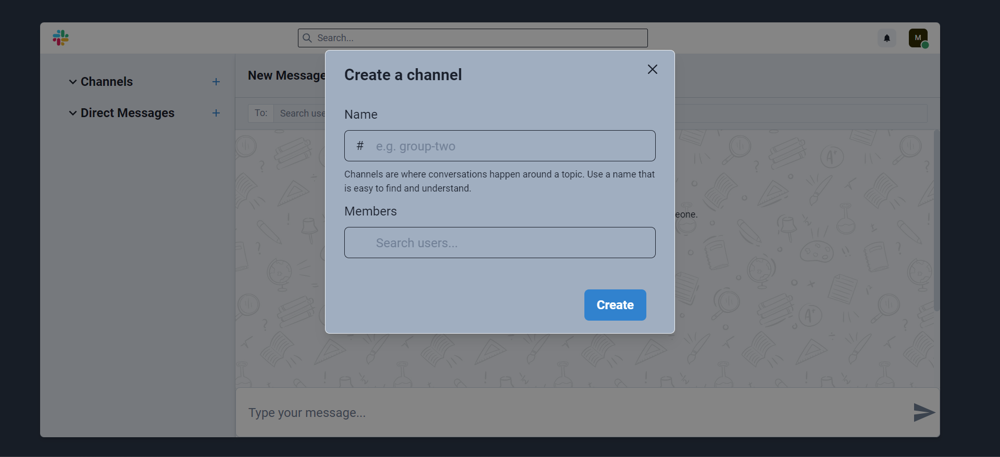

This Slack App Clone is a static frontend-only project designed to replicate the look and feel of Slack’s interface using React, Chakra UI, and SASS. It was created as a design and coding challenge to improve layout accuracy and component organization.
This project was created as a frontend practice challenge to enhance my skills in React, component-based architecture, and responsive design. Rebuilding the Slack interface helped me focus on layout precision, modularity, and styling consistency.
Through this project, I became more confident in breaking down complex UI designs into manageable components, using Chakra UI for consistency, and managing styles using SASS. It also reinforced the importance of planning component structure early in a project.